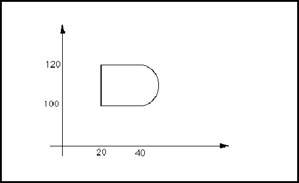

schematicUnits ::= '(' 'schematicUnits'
{ <schematicMetric> | <setAngle> | <setCapacitance> | <setFrequency>
| <setTime> | <setVoltage> }
')'
<physicalScaling !schematicSymbolHeader !schematicTemplateHeader !schematicViewHeader
SchematicUnits defines the units for schematicViews and schematic templates. It may be specified as a default for the entire data in edifHeader, for a library in libraryHeader or for a particular template or view in the view or template header. Refer to connectivityUnits for a full example.
schematicView ::= '(' 'schematicView'
viewNameDef
schematicViewHeader
logicalConnectivity
schematicImplementation
{ comment | userData }
')'
SchematicView introduces a view of type schematic to describe the schematic representation and connectivity of a cell.
(schematicView VIEW_1
(schematicViewHeader ...)
(logicalConnectivity
(instance ...)
(signal ...))
(schematicImplementation
(page ...)
...))
schematicViewHeader ::= '(' 'schematicViewHeader'
schematicUnits
{ <derivedFrom> | documentation | <nameInformation> |
<previousVersion> | property | <status> }
')'
SchematicViewHeader contains data that relates to the schematic view as a whole.
(schematicViewHeader (schematicUnits (setTime (unitRef ms))) (status ...) (documentation ...) ...)
schematicWireAffinity ::= '(' 'schematicWireAffinity'
( narrowWire | wideWire | unrestricted )
')'
SchematicWireAffinity specifies the type of schematic wire that is appropriate for a hotspot. The hotspot is intended to be connected to a schematic interconnect with a corresponding schematicWireStyle. This is not a semantic rule. The default is unrestricted.
See schematicWireStyle for a full example.
schematicWireStyle ::= '(' 'schematicWireStyle'
( narrowWire | wideWire )
')'
SchematicWireStyle indicates the style of schematic wire that is appropriate to represent a particular schematic interconnect.
If schematicWireStyle is specified for an interconnect, then the schematicWireAffinity of any hotspots connected to the schematic interconnect would usually correspond with this, according to the table below.
| SchematicWireStyle | Corresponding schematicWireAffinity for hotspots |
| narrowWire | narrowWire or unrestricted |
| wideWire | wideWire or unrestricted |
(schematicMasterPortTemplate A
(schematicTemplateHeader ...)
(hotspot (pt 0 0)
(schematicWireAffinity (wideWire)))
(input)
(schematicPortStyle (widePort)))
...
(schematicBus B (signalGroupRef ...)
(schematicInterconnectHeader ...
(schematicWireStyle (wideWire)) ...)
(schematicBusJoined ...) ...)
In this example the master port template A could be connected only to schematic interconnects with schematicWireStyle of wideWire, for example the bus B.
second ::= '(' 'second'
unitExponent
')'
pcbSecondHoleInformation secondIntegerExpression secondNumber secondStringExpression
Second is used to specify a user-defined unit in terms of the SI time unit, second. See unit for examples of the definition of units.
secondIntegerExpression ::= integerExpression
Specifies the second integer expression in integerEqual.
(integerEqual (integerParameterRef x) (integerParameterRef y))
Here, (integerParameterRef y) is the second integer expression.
secondNumber ::= integerToken
!time
SecondNumber represents a number of seconds within time.
secondStringExpression ::= stringExpression
Specifies the second string expression in stringEqual.
(condition
(stringEqual
(stringParameterRef processType)
"cmos1u"))
In this example, "cmos1u" is the second string expression.
section ::= '(' 'section'
sectionNameDef
sectionTitle
{ diagram | section | stringValue }
')'
ieeeSection pcbHoleCrossSection
Section is used to divide a document into sections.
Sections may be nested with other sections. This nesting can be used by a document processor to give hierarchical number schemes to sections.
The body of the section is implemented using any number of EDIF strings and diagrams.
The order of items within section is significant.
(section S1 (sectionTitle "Hierarchical Design")
(section S1_1
(sectionTitle "Why it does not work")
"..." ...)
(section S1_2
(sectionTitle "An alternative: Matrix Design")
". . . . "
(section S1_2_1
(sectionTitle
"Each circuit has two functions" )
". . . . ")
(section S1_2_2
(sectionTitle "Early results")
". . . . " ...))
(section S1_3 (sectionTitle "Summary")
". . . . "))
sectionNameDef ::= nameDef
SectionNameDef represents the name of a section.
sectionTitle ::= '(' 'sectionTitle'
stringToken
')'
SectionTitle is the title of a section.
(section S1_2_2 (sectionTitle "Early results") ". . . . " ...)
semiconductiveMaterial ::= '(' 'semiconductiveMaterial'
')'
Specifies that the material is predominantly used as a semiconductor.
(pcbMaterial Germanium (pcbMaterialHeader) (semiconductiveMaterial) (pcbStandardMaterial))
sequence ::= '(' 'sequence'
fromInteger
toInteger
{ <step> }
')'
Sequence is used to specify a range of integer values that start at fromInteger and end at toInteger, and are incremented up or down by the absolute value of the integerValue given by step.
(sequence 3 5)
This defines the series of integers 3, 4, 5.
(sequence 3 18 (step 5))
This defines the series of integers 3, 8, 13, 18.
(sequence 7 3 (step -2))
Here the ordered range of integers 7, 5 and 3 is specified.
(sequence 7 3 (step 2))
Just as in the previous example, here the ordered range of integers 7, 5 and 3 is specified.
setAngle ::= '(' 'setAngle'
unitRef
')'
<documentationUnits <geometryMacroUnits <maskLayoutUnits <pcbDrawingUnits <pcbLayoutUnits <schematicUnits <symbolicLayoutUnits
SetAngle sets the units for angular values in a particular context.
The default is that angles are measured in the SI unit of radians.
(unit milli_degree 1000 1 (degree 1)) ... (pcbLayoutUnits (setAngle (unitRef milli_degree)) ...)
This example defines the angle units for pcb layout to be milli_degree.
setCapacitance ::= '(' 'setCapacitance'
unitRef
')'
<connectivityUnits <designUnits <interfaceUnits <logicModelUnits <maskLayoutUnits <pcbLayoutUnits <pcbPartUnits <schematicUnits <symbolicLayoutUnits
SetCapacitance sets the units for capacitance values in a particular context.
The default is that capacitance is measured in the SI unit of farads.
(unit pF 1 (e 1 -12) (farad 1)) ... (schematicUnits (setCapacitance (unitRef pF)) ...)
This example defines the capacitance units for schematicViews to be pF.
setCurrent ::= '(' 'setCurrent'
unitRef
')'
SetCurrent sets the units for current values in a particular context.
The default is that current is measured in the SI unit of amperes.
(unit ma 1000 1 (ampere 1)) ... (logicDefinitions (setVoltage ...) (setCurrent (unitRef ma)) ...)
This example defines the current units for logicDefinitions to be ma.
setDensity ::= '(' 'setDensity'
unitRef
')'
<pcbLayoutUnits <pcbMaterialUnits
Sets the units for density values in a particular context.
(unit kgpcm 1 1 (kilogram 1) (meter -3)) ... (setDensity (unitRef kgpcm))
This example defines the density units to be kgpcm.
setDistance ::= '(' 'setDistance'
unitRef
')'
<documentationUnits !fonts <maskLayoutUnits <pcbDrawingUnits <pcbLayoutUnits !schematicMetric !strokeFont <symbolicLayoutUnits
SetDistance sets the units for distance values in a particular context.
The default is that distance is measured in the SI unit of meter.
(unit mm 1000 1 (meter 1)) ... (documentationUnits (setDistance (unitRef mm)) ...)
This example defines the distance units for documentation to be mm.
setElectricalConductivity ::= '(' 'setElectricalConductivity'
unitRef
')'
Sets the units for electrical conductivity values in a particular context.
(unit mhos 1 1 (ohm -1)) ... (setElectricalConductivity (unitRef mhos))
This example defines the conductivity units to be mhos.
setFrequency ::= '(' 'setFrequency'
unitRef
')'
SetFrequency sets the units for frequency values in a particular context.
The default is that frequency is measured in the SI unit of hertz.
(unit hz 1 1 (hertz 1)) ... (schematicUnits ... (setFrequency (unitRef hz))...)
This example defines the frequency units for schematicUnits to be hz.
setInductance ::= '(' 'setInductance'
unitRef
')'
SetInductance sets the units for inductance values in a particular context.
The default is that inductance is measured in the SI unit of henry.
(unit mh 1000 1 (henry 1)) ... (setInductance (unitRef mh))
This example defines the inductance units to be milli-henry.
setPower ::= '(' 'setPower'
unitRef
')'
SetPower sets the units for power values in a particular context.
The default is that power is measured in the SI unit of watts.
(unit mW 1000 1 (watt 1)) ... (setPower (unitRef mW))
This example defines the power units to be mW.
setPressure ::= '(' 'setPressure'
unitRef
')'
SetPressure sets the units for pressure values in a particular context.
The default is that pressure is measured in the SI unit of pascals (kilograms per meter per second per second), which must also be the underlying unit of setPressure.
(unit mPa 1000 1 (kilogram 1) (meter -1) (second -2)) ... (setPressure (unitRef mPa))
This example defines the pressure units to be mPa.
setResistance ::= '(' 'setResistance'
unitRef
')'
SetResistance sets the units for resistance values in a particular context.
The default is that resistance is measured in the SI unit of ohm.
(unit MEGOHM 1 1000 (ohm 1)) ... (setResistance (unitRef MEGOHM))
This example defines the resistance units to be megohm.
setSpecificHeatCapacity ::= '(' 'setSpecificHeatCapacity'
unitRef
')'
<pcbLayoutUnits <pcbMaterialUnits
specificHeatCapacity specificHeatCapacityValue
SetSpecificHeatCapacity sets the units for specific heat capacity values in a particular context.
The default is that specific heat capacity is measured in the SI unit of joules per kilogram per kelvin. The underlying unit of setSpecificHeatCapacity must be joules per kilogram per kelvin.
(unit sh 1 1 (joule 1) (kilogram -1) (kelvin -1)) ... (setSpecificHeatCapacity (unitRef sh))
This example defines the specific heat capacity units to be sh.
setTemperature ::= '(' 'setTemperature'
unitRef
')'
SetTemperature sets the units for temperature values in a particular context.
The default is that temperature is measured in the SI unit of kelvin. The underlying unit of setTemperature must be kelvin.
(unit k 1 1 (kelvin 1)) ... (setTemperature (unitRef k))
This example defines the temperature units to be k.
setThermalConductivity ::= '(' 'setThermalConductivity'
unitRef
')'
<pcbLayoutUnits <pcbMaterialUnits
Sets the units for thermal conductivity values in a particular context.
(unit wpmpk 1 1 (watt 1) (meter -1) (kelvin -1)) ... (setThermalConductivity (unitRef wpmpk))
This example defines the conductivity units to be mhos.
setTime ::= '(' 'setTime'
unitRef
')'
<connectivityUnits <designUnits <interfaceUnits <logicModelUnits <maskLayoutUnits <pcbLayoutUnits <schematicUnits <symbolicLayoutUnits
SetTime sets the units for time values in a particular context.
The default is that time is measured in the SI unit of seconds.
(unit ms 1000 1 (second 1)) ... (pcbLayoutUnits (setTime (unitRef ms)) ...)
This example defines the time units for pcb layout to be ms.
setVoltage ::= '(' 'setVoltage'
unitRef
')'
!logicDefinitions <pcbLayoutUnits <schematicUnits
SetVoltage sets the units for voltage values in a particular context.
The default is that voltage is measured in the SI unit of volts.
(unit mv 1000 1 (volt 1)) ... (setVoltage (unitRef mv))
This example defines the voltage units to be mv.
shape ::= '(' 'shape'
curve
')'
*closedAreaCutout closedAreaElement *closedAreaElementSet closedAreaOutline *figure *geometryElementSet *geometryMacro
openShape pcbMinimumLayoutShapeToBoardEdge pcbMinimumLayoutShapeToLayoutShape pcbMinimumSurfaceMountPadToLayoutShape pcbMinimumThroughHolePadToLayoutShape pcbMinimumTraceToLayoutShape pcbMinimumViaPadToLayoutShape pcbNonSpecificLayoutShape pcbNonSpecificLayoutShapeClass pcbOptimumTraceToLayoutShape pcbPackageOutlineSpecialShape pcbPackageShape projectionShape unfilledShape
Shape is similar to polygon, except that it may include arcs in its perimeter. Shape is closed by definition. If the last point specified is not the same as the first point specified, a straight line is used to close the shape.
(shape
(curve
(pt 20 100)
(arc
(pt 40 100)
(numberPoint 50 110)
(pt 40 120))
(pt 20 120)))
This example consists of one arc from (40, 100) through (50, 110) to (40, 120), and three straight line segments: from (40, 120) to (20, 120), from (20, 120) back to (20, 100), and from (20, 100) to (40, 100). This is shown in the figure below, assuming hollow filled.
